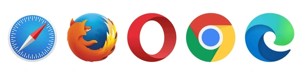

HTML5 Семантичні елементи
Семантичний елемент чітко описує його значення як для браузера, так і
для розробника.
Приклади не семантичних елементів: <div> і <span>- нічого не говорить
про його вміст.
Приклади семантичних елементів: <form>, <table> і <article>- чітко
визначає його зміст.
Підтримка браузерів
Семантичні елементи HTML5 підтримуються у всіх сучасних браузерах.
Крім того, ви можете "навчити" старих браузерів, як обробляти "невідомі
елементи".
Прочитайте про це в підтримці браузера HTML5
Нові семантичні елементи в HTML5
HTML5 пропонує нові семантичні елементи для визначення різних частин веб-сторінки:
-
<section> -
<article> -
<header> -
<footer>
HTML5 <section> елемент
Елемент <section> визначає розділ в документі.
Згідно з документацією в3к′с HTML5: "розділ представляє собою тематичну
угруповання контенту, зазвичай з заголовком".
Домашня сторінка зазвичай може бути розділена на розділи для
ознайомлення, змісту і контактної інформації.
Приклад
<section>
<h1>WWF</h1>
<p>The World Wide Fund for Nature (WWF) is....</p>
</section>
HTML5 <article> елемент
Елемент <article> визначає незалежний, автономний вміст.
Стаття повинна мати сенс самостійно, і вона повинна мати можливість
читати його незалежно від іншої частини веб-сайту.
Приклади того, де можна використовувати елемент <article>
- Повідомлення на форумі
- блозі
- Газетна стаття
Приклад
<article>
<h1>What Does WWF Do?</h1>
<p>WWF's mission is to stop the degradation of our planet's natural environment,
and build a future in which humans live in harmony with nature.</p>
</article>
HTML5 <header> елемент
Елемент <header> задає заголовок для документа або розділу.
Елемент <header> повинен використовуватися в якості контейнера для
вступного змісту.
В одному документі може бути кілька елементів <header>.
У наступному прикладі визначається заголовок для статті:
Приклад
<article>
<header>
<h1>What Does WWF Do?</h1>
<p>WWF's mission is to stop the degradation of our planet's natural environment,
and build a future in which humans live in harmony with nature.</p>
<header>
</article>